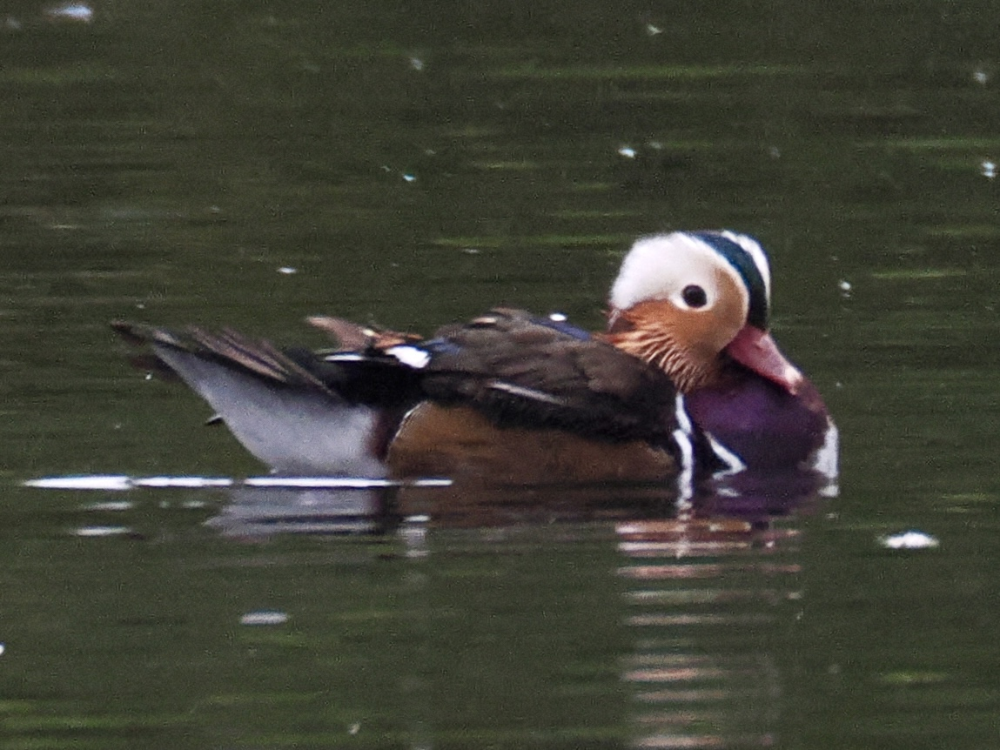
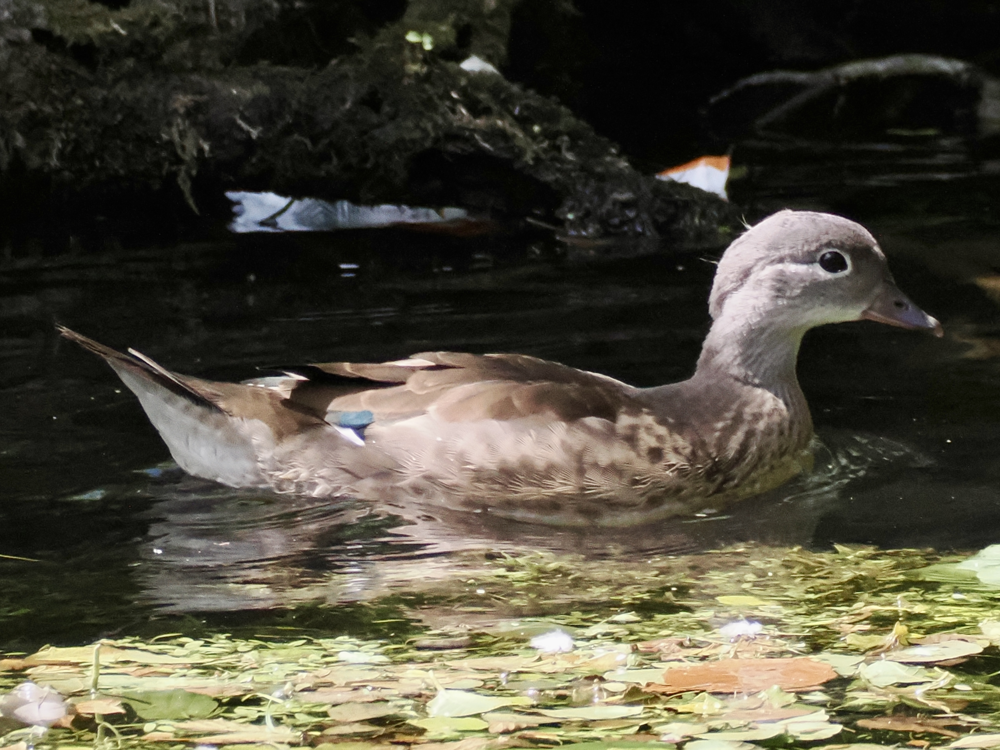

Mandarin Duck
Aix galericulata
Order: Anseriformes
Family: Anatidae

Native to Asia and introduced to Europe. Male is flamboyant, mostly orange with some purples and greens. Averages smaller than mallards, with a different bill shape.

Female is brown with a white eye-ring and dots on the belly and flanks. Could be found perching on trees!